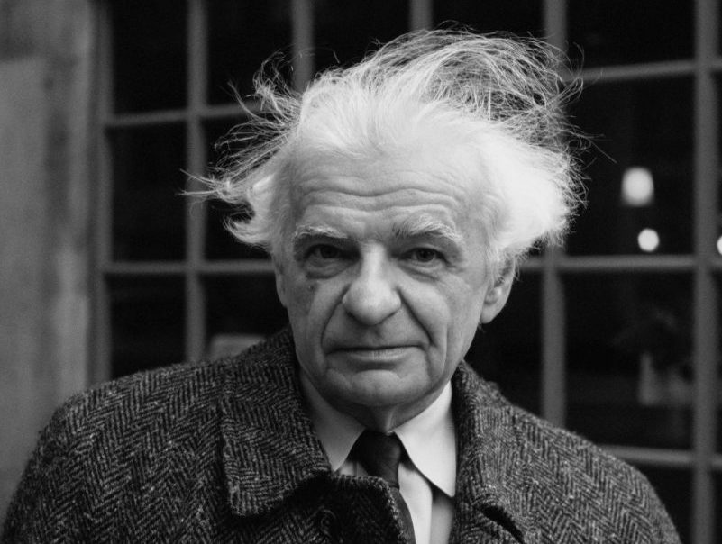
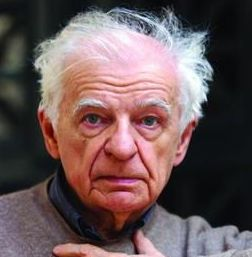
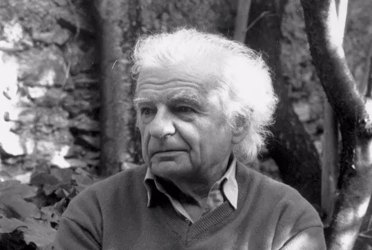
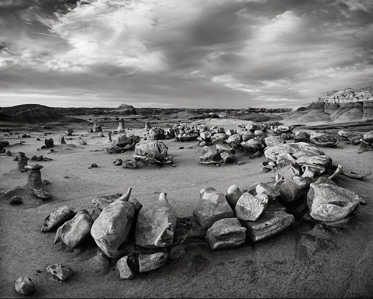
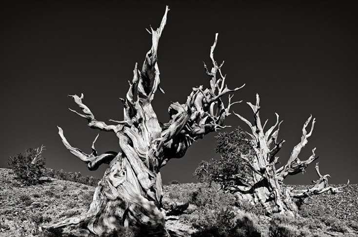
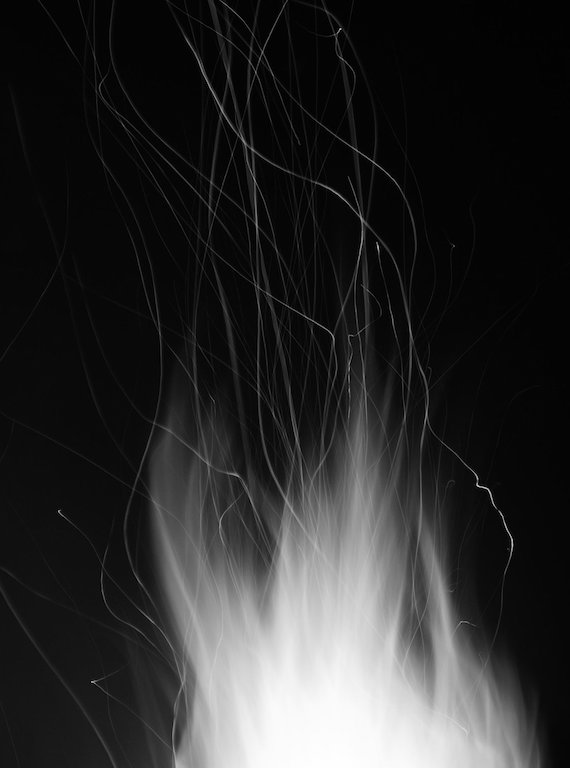
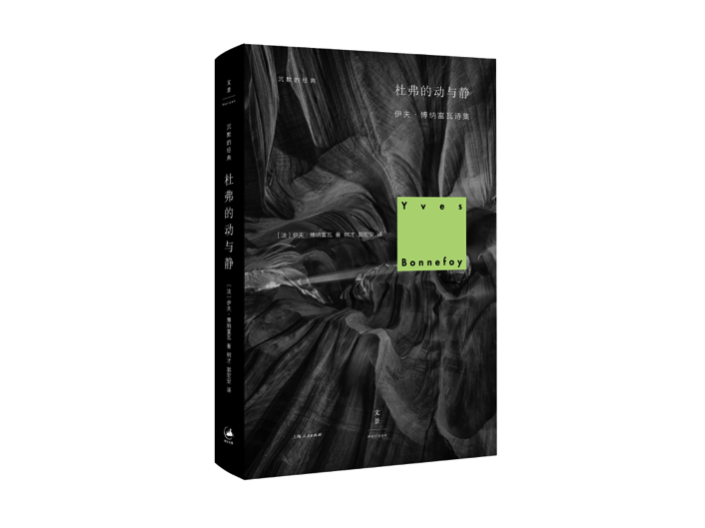

我看见你在平地上奔跑，
我看见你与风搏斗，
寒冷在你的唇上滴血。
我看见你突然折断，享用着死亡，比闪电更
美，当闪电用你的血在白色窗玻璃上
溅落斑点。
衰老的夏天用一种单调的快乐使你裂开，我们瞧
不起沉醉于不完美地活着。
“不如藤，你说，缠绕在夜的石头上：没有出路的
在场，没有根的脸。
最后一块幸福的窗玻璃被太阳的指甲撕烂，不如
在山村里死去。
不如这风……”
是一阵比我们的记忆更强劲的风，
表皮惊呆，岩石尖叫——你从这些火焰面前经过
方形的头，有裂痕的手，你的一切
都在你手势狂喜的鼓上探求死亡。
这是你乳房的日子，
你最终用我的头脑不在而治。
4
我醒了，下着雨。风吹进你，杜弗，溢脂的荒野
在我的身边沉睡。我在一个平地上，在一个死亡的窟
窿里。叶簇的大犬星座颤抖着。
你抬起的手臂，突然，在一扇门上，透过岁月照
亮我。闪着炭火的村庄，我看见你随时生，杜弗，
随时死。
举起的手臂和转动的手臂
在同一瞬间只为了我们沉重的头，
但这些污泥和青草的波浪流过
只剩下死亡王国的一堆火。
搬空的腿，大风吹进来
催生雨点的脑袋
只在这王国的门槛上把你照亮，
杜弗的手势，已经变慢的手势，阴郁的手势。
哪一种苍白扑打你，地下河，哪一条血管在你的
身上破裂，那里回响着你的瀑布？
你举起的这只手臂突然打开，燃烧。你的脸退却。
哪一种增强着的雾从我这里扯掉你的目光？幽灵的缓
缓的岸，死亡的边界。
沉默的手臂迎接你，彼岸的树。
受了伤，你混入叶丛，
但被迷路的血迹抓获，
你还是活命的同谋。
我看见你搏斗之后浑身是沙
徘徊在水和寂静的周围，
而最后的星星那弄脏了的嘴
用一声喊叫打破你守夜的恐惧。
在坚硬的空中突然竖起像一块岩石
一个煤的漂亮手势。
8
稀奇古怪的音乐开始于手，于膝，然后是摇晃的
头，音乐在唇下得到确认，它的确定透入脸的地下
部分。
此刻，脸上的细腻表情崩溃。此刻，我们扯掉目光。
爬满昆虫的天花板下，白晃晃的，难以照亮，从
侧面
你的裙子溅上灯的毒液，
我发现你直躺着，
你的嘴比那条在远处大地上碎裂的河更高。
不可战胜的生命聚拢溃败的生命，
在寒冷的火把里重新获得在场，
永恒的窥视者，我发现你死了，
杜弗说这是凤凰，我在这寒冷中守护。
10
我看见杜弗直躺着。在肉身空间的最高处，我听
见她发出响声。那些金龟子急急啃噬，越过这个空间，
杜弗的双手在那里生长，骨头从肉中剥落，变成灰布，
被成群的蜘蛛照亮。
被世界静悄悄的苔藓覆盖，
被一只活蜘蛛的光线穿透，
已经屈从于沙子的命数
秘密的知识四分五裂。
为虚空中的一个节日打扮，
被发现的牙齿像是为了爱，
我当下的无法支撑的死亡之泉。
我看见杜弗直躺着。在空气的猩红色的城里，树枝
在她的脸上激战，一些根在她的体内找到了道路——
她感到某种昆虫的尖利的快乐，某种可怕的音乐。
以土地的阴郁的步伐，毁坏的杜弗，狂喜的杜弗，
同高原上疙疙瘩瘩的灯相遇。
你的脸今晚被土地照亮，
但我看见你的眼睛正在腐烂，
脸这个字不再有意义。
内在的海被盘旋的鹰照亮，
这是一个意象。
我在一种深度里拥有冷冰的你，那里意象不再出现。
我看见杜弗直躺着、在一个白色的房间里，眼睛
塞满石膏，嘴巴令人晕眩，双手听命于茂盛的草，草
从各个方向侵入。
门开了。一个乐队向前走去。一些复眼，一些起
毛的胸，一些冰冷的头颅，尖嘴，大颚，将她淹没。
呵你拥有令土地急追的一个侧影，
我看见你消失。
你唇上赤裸的草和水晶石的闪烁
创造出你最后的微笑。
深奥的科学，那里烘烤着
理智的老斗兽者。
一团暗火的居所，我们的山坡在那里汇合！在它
的穹顶下，我看见你闪着亮光，一动不动的杜弗，被
死亡这垂直的网捕获。
天才的杜弗，被掀翻的杜弗：当太阳在悲哀的空
间迈出步子，她缓缓地走进下面的楼层。
现在山谷插入嘴，
现在五指分开意外的森林，
现在脑袋率先淹没在草丛中，
现在喉咙塞满雪和狼群，
现在眼睛在哪些死亡的行人身上刮起风，
是我们，在这风，这水，这寒冷中。
18
确切的在场，任何火焰都不能缩减它；隐秘寒冷
的护送者；活生生的，从这复活并增强着的血里，诗
篇撕烂。
你就得这样在无声的极限处呈现，而从你的光转
暗的那个阴郁的地点，你得承受考验。
你更美了，你的笑声中浸透着死亡！现在我敢同
你碰面，我经受得住你手势的闪光。
寒冷的第一天我们的脑袋越狱
像一个囚犯从严重的臭氧中逃脱，
但是杜弗这支箭瞬间重又坠落
并把她头颅的荣耀打碎在地上。
就这样我们相信我们的手势复活，
但脑袋被否定我们喝一种冷水，
而几束死亡悬挂起你的微笑，
在这世界的厚度中试图打开。
毁坏的杜弗，狂喜的杜弗 | 博纳富瓦的《戏剧》

伊夫·博纳富瓦 · 2017-11-11 10:04:53
伊夫·博纳富瓦是龚古尔文学奖、卡夫卡文学奖得主，20世纪法国最重要的诗人、翻译家、文学评论家，也是“二战”后世界诗坛举足轻重的巨匠。他的诗是一场对生命“在场”的鲜活感的追逐，是词语的多变修辞在黑暗中擦出的超验之光，也是毫无畏惧地与死亡共舞的风的搏斗。正如《杜弗的动与静》中，诗人开篇对黑格尔的引言：“精神的生命绝不在死亡面前恐惧，并且不是那种纯粹的生命。它是支撑着死亡的生命，并且在死亡中维持。”
从 1947 年的诗作《反柏拉图》开始，他一直视僵硬的概念为诗的死敌。为了击溃这个死敌，博纳富瓦日复一日地用生命体验的一个个鲜活瞬间，打磨成一个个词，做成一首首诗，直到它们变成一道道光，刺穿围困生命的黑暗。
光和黑暗的拉锯式进退，既是博纳富瓦对生命“在场”的无限渴望，也是他对无所不在的“死亡”的强烈意识。在诸多矛盾的两难之间，在二元对立的困境中，博纳富瓦选择居留在“中间地带”，以探索“两个世界之间”的复杂关系。

博纳富瓦
1953年，博纳富瓦的《杜弗的动与静》震撼了法国诗坛，他继承了法国超现实主义和象征主义传统，探索着“真正的地点”和直面死亡的“精神的生命”。诗集以“戏剧”开篇，如一出五幕悲剧，探求抒情的“我”与“杜弗”之间的关系。诗中的“杜弗”，是幻变的真实，既是奔跑的女人，又是旷野，是村庄，又是地下河，还是“真实的在场”。
戏剧
1
2
3

Image by Jeff Kohn
4
5

Image by Jeff Kohn
6
7
8
9

Image from Deviant Art
10
11
12
Image by Kiyomichi Koike
13
14
15
16
Image by Bruce Gary
17
18
19
树才 译
部分内容摘选自《杜弗的动与静》译后记


推荐阅读